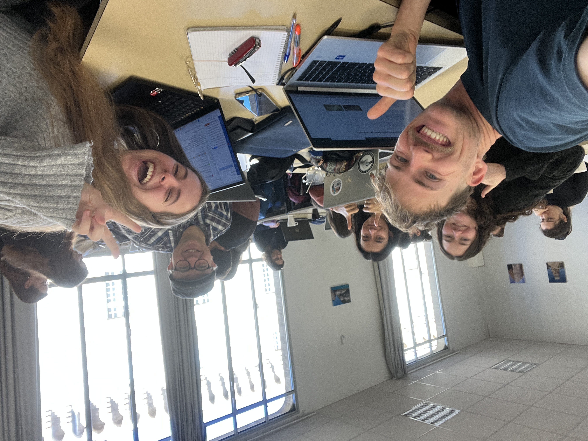
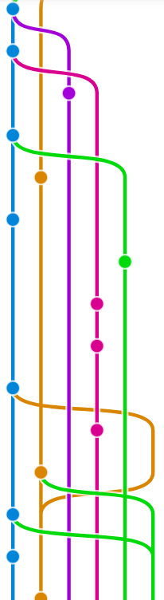
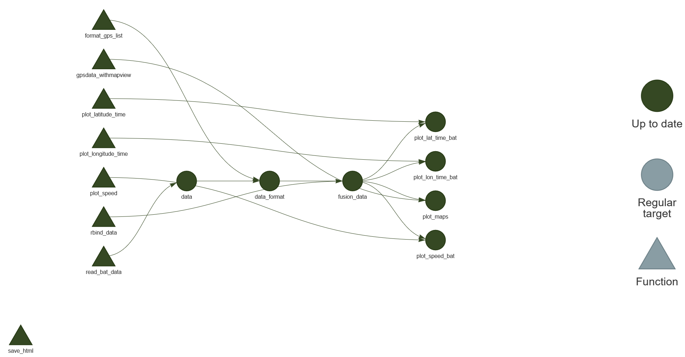
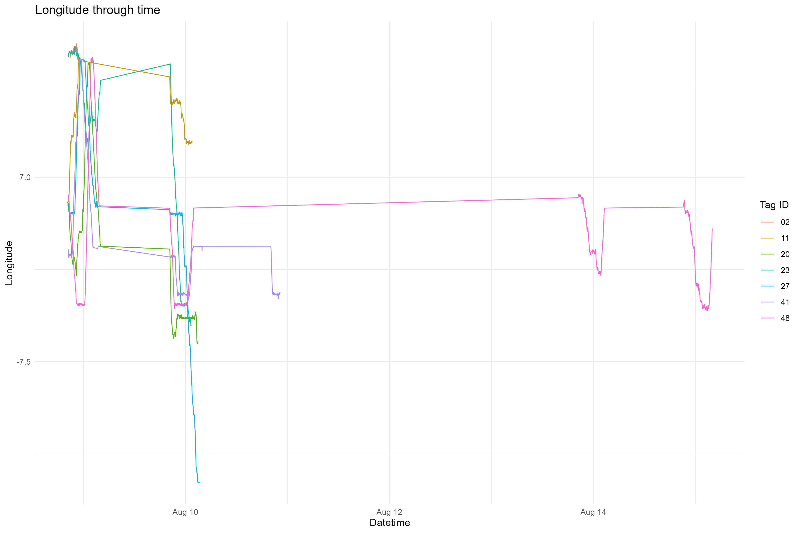
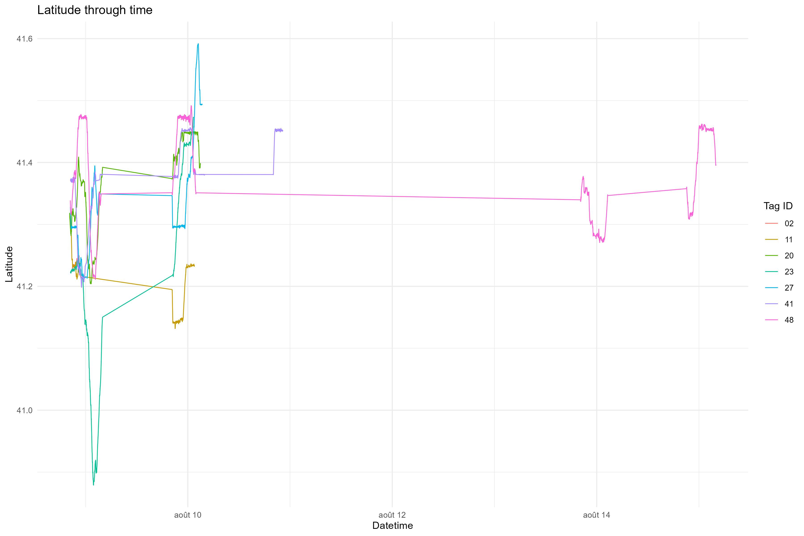
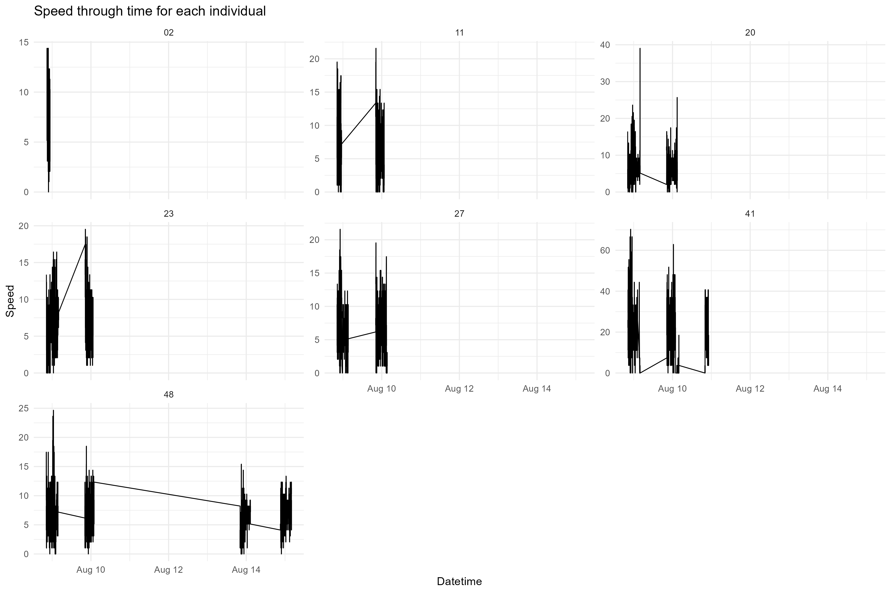

library(targets)
data<-tar_read("data")
data_format<-tar_read("data_format")
fusion_data<-tar_read("fusion_data")Présentation du (package) gpsdata4lazyscientists
gpsdata4lazyscientists
Et si pouviez charger, nettoyer et formater vos données GPS en un seul clic ? Ne rêvez plus, nous avons rendu cela possible : le package gpsdata4lazyscientists est là pour vous !

See Figure 1 for an illustration of the team building experience during this workshop
exploration of git 
Les données GPS : kézako ?
Les données de suivi par balise GPS ont une structure standardisée, avec a minima les colonnes suivantes :
- ID de l’individu
- Longitude
- Latitude
- DateTime
- … et pourquoi pas une colonne en bonus, par exemple la vitesse !
Ce que propose notre (futur) package:
Les fonctions magnifiques que nous avons créées
dans un joli dossier “R”
- read_bat_data()
- format_gps_list()
- combine_data()
- gpsdata_withmapview()
- Plein de plots rigolos et qui assureront des soirées de rigolades entre ami.es chercheur.euses qui traitent des données GPS en tout genre
Structure du compendium
.
├── DESCRIPTION # Project metadata
├── LICENSE.md # License of the project
├── Presentation.html # HTML format of our presentation
├── Presentation.qmd # QMD format of our presentation
├── R # Contains R functions
│ ├── README.md
│ ├── combine_data.R # Function to merge datasets
│ ├── format_gps_list.R # Function to remove NA and remove columns
│ ├── gpsdata_withmapview.R # Function to plot map of tracking data
│ └── read_bat_data.R # Open the tracking data
│ └── speed.R # Calculate speed of the individuals
├── README.md # Presentation of the project
├── analyses # Contains R scripts
│ └── README.md
├── data # Contains raw data
│ ├── Bat1_3D6001852B958.csv
│ ├── Bat2_3D6001852B95D.csv
│ ├── Bat3_3D6001852B978.csv
│ ├── Bat4_3D6001852B980.csv
│ ├── Bat5_3D6001852B98C.csv
│ ├── Bat6_3D6001852B98E.csv
│ ├── Bat7_3D6001852B9A3.csv
│ ├── Bat8_3D6001852B9A7.csv
│ └── README.md
├── figures # Folders with our output figures
│ └── README.md
├── make.R # Script to setup & run the project
└── outputs
└── README.mdBig up à Gaelle qui nous a généré cet arbre de façon automatique <3
Workflow
Voici notre pipeline (oui, des experts en targets)

Exploration de données
Import des données
Initial dataset
str(data$Bat1_3D6001852B958)names(data$Bat1_3D6001852B958) [1] "event-id" "visible"
[3] "timestamp" "location-long"
[5] "location-lat" "gps:hdop"
[7] "gps:maximum-signal-strength" "gps:satellite-count"
[9] "ground-speed" "height-above-msl"
[11] "manually-marked-outlier" "sensor-type"
[13] "individual-taxon-canonical-name" "tag-local-identifier"
[15] "individual-local-identifier" "study-name" On a de super données de suivi GPS de chauve-souris ! Impressive et de bonne qualité
Il y a trop de colonnes pour nous, useless :)
str(data_format$Bat1_3D6001852B958)tibble [1,265 × 5] (S3: tbl_df/tbl/data.frame)
$ tag_id : chr [1:1265] "23" "23" "23" "23" ...
$ datetime: POSIXct[1:1265], format: "2017-08-08 20:27:38" "2017-08-08 20:28:07" ...
$ lon : num [1:1265] -6.68 -6.67 -6.67 -6.67 -6.67 ...
$ lat : num [1:1265] 41.2 41.2 41.2 41.2 41.2 ...
$ speed : num [1:1265] 13.36 12.33 11.31 4.11 3.08 ...Oh waw, c’est bien mieux :)
Presentation des données
trajectoires <- fusion_data |>
dplyr::group_by(tag_id) |>
dplyr::summarise(
n_points = dplyr::n(),
amplitude_lat = max(lat, na.rm = TRUE) - min(lat, na.rm = TRUE),
amplitude_lon = max(lon, na.rm = TRUE) - min(lon, na.rm = TRUE),
max_speed = max(speed, na.rm = TRUE),
longueur_km = sum(geosphere::distHaversine(cbind(lon, lat)))/1000
)| tag_id | n_points | amplitude_lat | amplitude_lon | max_speed | longueur_km |
|---|---|---|---|---|---|
| 02 | 219 | 0.031615 | 0.042879 | 14.38889 | 32.82234 |
| 11 | 900 | 0.181903 | 0.399564 | 21.58333 | 132.78080 |
| 20 | 1568 | 0.246391 | 0.759614 | 39.05556 | 267.60394 |
| 23 | 1265 | 0.594391 | 0.756603 | 19.52778 | 248.81147 |
| 27 | 1435 | 0.379022 | 1.147372 | 21.58333 | 259.26498 |
| 41 | 1623 | 0.258297 | 0.657285 | 70.30000 | 243.06551 |
| 48 | 2863 | 0.280509 | 0.685906 | 24.66667 | 518.78961 |
La carto qui ne s’exportait pas en HTML

D’autres analyses…


